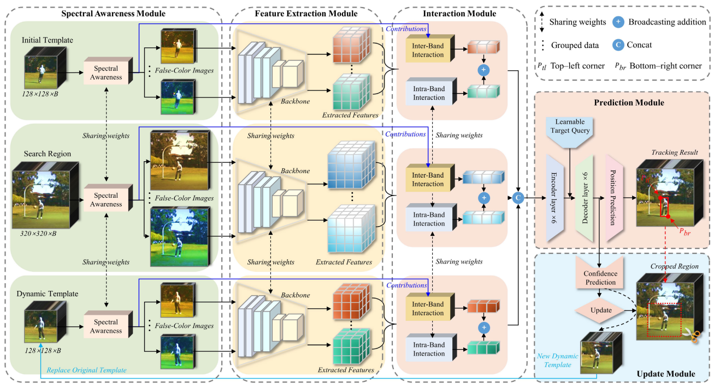
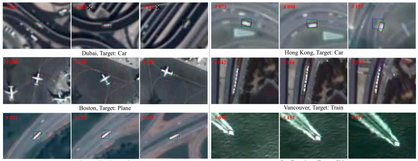

Yuzeng Chen's Homepage:
Yuzeng Chen (陈玉增) |
{kind=link}
Biography
Yuzeng Chen is currently a Ph.D. candidate at Wuhan University, School of Geodesy and Geomatics (SGG). He received his master in Central South University (CSU), School of Geosciences and info-physics. He received his bachelor in Southwest University of Science and Technology (SWUST). Drawing upon the realms of remote sensing image/video processing and computer vision.
News
[2024.03] We have released the LMOD: A Large-scale and Multiclass Moving Object Detection Dataset for Satellite Videos.[2024.03] Codes and datasets for OOTB have been released.[2024.03] Codes for REPS have been released.[2024.03] Codes for DF have been released.[2024.03] One paper has been accepted by ISPRS.[2024.02] One paper has been accepted by JAG.[2023.12] One paper has been accepted by IEEE TGRS.
Education:
-
Ph.D. in Wuhan University, SGG.
Supervisor: Prof. Qiangqiang Yuan (袁强强) and Prof. Liangpei Zhang (张良培)
2023.09～Now
-
M.S. in Central South University, School of Geosciences and Info-Physics.
Supervisor: Prof. Yuqi Tang
2020.09～2023.06
-
B.S. in Southwest University of Science and Technology, School of Environment and Resource
2016.09～2020.06
-
Studied at Robot Technology Used for Special Environment Key Laboratory of Sichuan Province
Supervisor: Prof. Hua Zhang
2017.09～2020.06
Co-authors:
Publications
 |
|
 |
|
|  | |
 |
[ |
|  |
[ |
 |
Awards and Honors
2022 , National Scholarship for Graduate Student, Ministry of Education | 国家奖学金2019 , National Scholarship for Graduate Student, Ministry of Education | 国家奖学金2018 , National Scholarship for Graduate Student, Ministry of Education | 国家奖学金2023 , Outstanding Undergraduate, CSU | 中南大学优秀研究生毕业生2022 , Weiqiao Aluminum & Electric Scholarship, CSU | 中南大学魏桥铝电企业奖学金2022 , First Prize Academic Scholarship, CSU | 中南大学学业一等奖学金2021 , First Prize Academic Scholarship, CSU | 中南大学学业一等奖学金2020 , Outstanding Undergraduate, Sichuan Provincial Department of Education | 四川省优秀本科毕业生2019 , Fuzhang Special Scholarship, SWUST | 西南科技大学涪璋特等奖学金2018 , First Prize of Sichuan University Students' Surveying and Mapping Skills Competition, Ministry of Education | 四川省测绘竞赛一等奖- ...